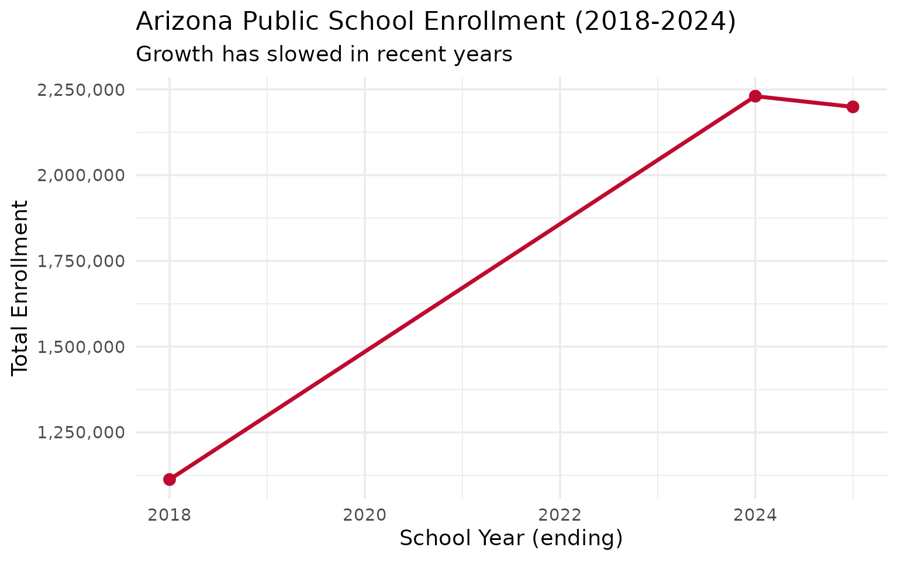

library(azschooldata)
library(dplyr)
library(tidyr)
library(ggplot2)
theme_set(theme_minimal(base_size = 14))This vignette explores Arizona’s public school enrollment data.
Note: Currently available for years 2018, 2024, and 2025. Years 2019-2023 are not available as Excel downloads.
Statewide Enrollment Trends
enr <- fetch_enr_multi(c(2018, 2024, 2025))
state_totals <- enr |>
filter(is_state, subgroup == "total_enrollment", grade_level == "TOTAL") |>
select(end_year, n_students) |>
mutate(change = n_students - lag(n_students),
pct_change = round(change / lag(n_students) * 100, 2))
state_totals
#> end_year n_students change pct_change
#> 1 2018 1112682 NA NA
#> 2 2024 2230271 1117589 100.44
#> 3 2025 2199141 -31130 -1.40
ggplot(state_totals, aes(x = end_year, y = n_students)) +
geom_line(linewidth = 1.2, color = "#BF0A30") +
geom_point(size = 3, color = "#BF0A30") +
scale_y_continuous(labels = scales::comma) +
labs(
title = "Arizona Public School Enrollment (2018-2024)",
subtitle = "Growth has slowed in recent years",
x = "School Year (ending)",
y = "Total Enrollment"
)
Gender Distribution
gender_by_year <- enr |>
filter(is_state, grade_level == "TOTAL",
subgroup %in% c("male", "female")) |>
select(end_year, subgroup, n_students) |>
pivot_wider(names_from = subgroup, values_from = n_students)
gender_by_year
#> # A tibble: 3 × 3
#> end_year male female
#> <dbl> <dbl> <dbl>
#> 1 2018 570750 541889
#> 2 2024 1136269 1093826
#> 3 2025 1119644 1079300
enr |>
filter(is_state, grade_level == "TOTAL",
subgroup %in% c("male", "female")) |>
mutate(pct = n_students / n_students[subgroup == "total_enrollment"][1] * 100,
subgroup = ifelse(subgroup == "male", "Male", "Female")) |>
ggplot(aes(x = end_year, y = pct, fill = subgroup)) +
geom_col(position = "dodge") +
scale_fill_manual(values = c("Male" = "#0072B2", "Female" = "#CC79A7")) +
scale_y_continuous(labels = function(x) paste0(x, "%")) +
labs(
title = "Gender Distribution Over Time",
x = "School Year",
y = "Percentage",
fill = "Gender"
)
Data Availability
This package uses data from the Arizona Department of Education October 1 enrollment reports.
Currently available years: 2018, 2024, 2025
Missing years: 2019-2023 (Excel files not available as automated downloads - Cloudflare protection blocks programmatic access)
Data included: - State totals by grade level and gender - District and school totals - County-level aggregates
For more information, see the package README and function documentation.